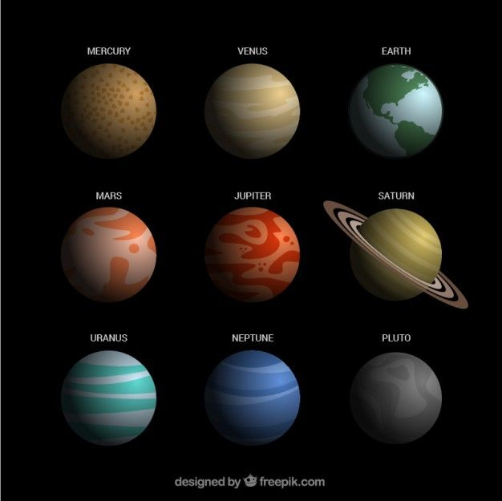

El Sistema Solar

El sistema solar es un conjunto de cuerpos celestes que orbitan alrededor del Sol, incluyendo planetas, satélites, asteroides, cometas y otros objetos. Su estudio nos permite comprender el origen y la dinámica del universo cercano, así como el lugar que ocupa la Tierra en el cosmos.
El Sol
El Sol es la estrella en el centro del sistema solar. Es una esfera gigante de gas caliente compuesta principalmente de hidrógeno y helio, que emite luz y calor esenciales para la vida en la Tierra.

Gracias a su enorme gravedad, el Sol mantiene a los planetas y otros cuerpos celestes en órbita a su alrededor. Representa más del 99% de la masa total del sistema solar.
Su energía se produce por un proceso llamado fusión nuclear, donde los núcleos de hidrógeno se combinan para formar helio, liberando enormes cantidades de energía.
Los Planetas
El sistema solar cuenta con ocho planetas principales, divididos en dos grupos: los planetas rocosos (Mercurio, Venus, Tierra y Marte) y los gigantes gaseosos (Júpiter, Saturno, Urano y Neptuno).

Cada planeta tiene características únicas, como tamaños, atmósferas, temperaturas y número de lunas. Por ejemplo, la Tierra es el único planeta con vida conocida, y Júpiter es el más grande.
La disposición de los planetas permite estudiar cómo se formó el sistema solar hace unos 4.600 millones de años y entender mejor otros sistemas planetarios en la galaxia.